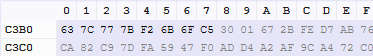
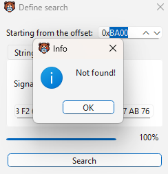

// transmission 001
Hide encryption signatures from analysis
Here is the whole test: pad a byte buffer, encrypt it in place with AES-256-CBC, decrypt it, and check that the original bytes come back. That small round trip gives us all the cipher context we need for the static-table experiment.
The complete source is here if you want to follow along: github.com/DeadKennedyx/hidden-tiny-aes
AES-256-CBC, briefly
AES-256 refers to the 32-byte key. The block size stays fixed at 16 bytes. With that key size, this build runs 14 rounds and produces a 240-byte expanded key schedule:
#define AES256 1
#define AES_BLOCKLEN 16
#define AES_KEYLEN 32
#define AES_keyExpSize 240CBC works on complete blocks, so PKCS#7 fills the final block by appending n bytes whose value is also n. The first plaintext block is XORed with the IV. Every block after that is XORed with the previous ciphertext block:
C[0] = AES(key, P[0] XOR IV)
C[i] = AES(key, P[i] XOR C[i - 1])The IV is 16 bytes too. It must be fresh and unpredictable for every encryption under the same key, and it can be stored beside the ciphertext.
Why the S-box appears in the binary
AES arranges each block as a 4 x 4 byte state. For our purposes, the flow is simple: AES-256 applies an initial round key, runs thirteen full rounds, then finishes with a round that leaves out MixColumns.
AddRoundKey(0, state, RoundKey);
for (uint8_t round = 1; round < Nr; round++) {
SubBytes(state);
ShiftRows(state);
MixColumns(state);
AddRoundKey(round, state, RoundKey);
}
SubBytes(state);
ShiftRows(state);
AddRoundKey(Nr, state, RoundKey);SubBytes is the nonlinear step. It reads from a fixed 256-byte S-box, while decryption reads from the inverse table. ShiftRows moves bytes around, MixColumns diffuses each column in GF(28), and AddRoundKey XORs in the expanded key. Those compiled lookup tables are the recognizable patterns I want to change, so we do not need a deeper AES walkthrough here.
Why tiny-AES instead of BCrypt
With tiny-AES, the cipher is compiled directly into the program. This path has no bcrypt.dll import, no provider setup, and no external crypto API to wrap. The source is small enough to step through, works outside Windows, and lets me disable unused modes at compile time.
Some analysis tools treat crypto API imports as one clue among many. Removing that import changes the dependency and telemetry profile, but nothing becomes invisible. The AES tables, key schedule, high-entropy output, and surrounding behavior can all be observed. For me, the real benefit is control over a small dependency.
That control also opens the door to a useful experiment. Recognizable components such as the S-box tables can be encoded on disk and rebuilt at runtime, which removes byte patterns commonly used to fingerprint an encryption program.
Engineering the table-encoding experiment
First, I needed a baseline. PE-bear showed that the normal tiny-AES build stored the forward S-box as 256 literal bytes in .rdata. It begins with the familiar sequence 63 7C 77 7B F2 6B 6F C5, and searching for that prefix leads straight to the table. The inverse S-box has the same problem. Its opening bytes are 52 09 6A D5.
The goal was straightforward: change how the tables look on disk without changing the AES computation. Instead of placing the standard bytes in the executable, I compiled an XOR-encoded copy into read-only data. Writable storage holds the real table after the AES context is initialized.
encoded byte = AES table byte XOR 0xA7
runtime byte = encoded byte XOR 0xA701 / Encode constants during compilation
I added two macros near the top of aes.c. Because ENC_BYTE receives a literal constant, the compiler evaluates the XOR while building the initializer. For example, ENC_BYTE(0x63) emits C4 because 63 XOR A7 = C4. The original 63 byte is never written to the file by that initializer.
#define TABLE_XOR_KEY 0xA7
#define ENC_BYTE(x) ((uint8_t)((x) ^ TABLE_XOR_KEY))The original constant S-box became encoded_sbox, with all 256 values wrapped in the macro. A separate zero-initialized array becomes the writable runtime table used by the existing lookup code.
static const uint8_t encoded_sbox[256] = {
ENC_BYTE(0x63), ENC_BYTE(0x7c),
ENC_BYTE(0x77), ENC_BYTE(0x7b),
ENC_BYTE(0xf2), ENC_BYTE(0x6b),
ENC_BYTE(0x6f), ENC_BYTE(0xc5),
/* ...all 256 original values... */
};
static uint8_t sbox[256];The encoded array stays constant and normally lands in read-only initialized data. The zero-initialized runtime array needs writable storage, so it is usually represented as uninitialized data in the image. The linker decides the exact PE layout. What matters here is that the standard lookup bytes no longer appear in their original form on disk.
02 / Apply the same transformation to decryption
Changing only the forward table would leave a second recognizable AES table in the executable. This round-trip test also calls AES_CBC_decrypt_buffer, whose inverse rounds read from rsbox. I encoded all 256 inverse S-box values and added a writable runtime copy for them too.
#if (defined(CBC) && CBC == 1) || \
(defined(ECB) && ECB == 1)
static const uint8_t encoded_rsbox[256] = {
ENC_BYTE(0x52), ENC_BYTE(0x09),
ENC_BYTE(0x6a), ENC_BYTE(0xd5),
/* ...all 256 original values... */
};
static uint8_t rsbox[256];
#endifI kept tiny-AES's existing mode guard around the inverse table. A CTR-only build never uses inverse AES rounds, so there is no reason for it to allocate or reference rsbox.
03 / Restore both tables during initialization
The decoder is small. It walks both encoded arrays and applies the same XOR key again. Since XOR is its own inverse, that second operation rebuilds the exact bytes expected by SubBytes and InvSubBytes.
static void decode_tables(void)
{
for (size_t i = 0; i < 256; i++) {
sbox[i] = encoded_sbox[i] ^ TABLE_XOR_KEY;
#if (defined(CBC) && CBC == 1) || \
(defined(ECB) && ECB == 1)
rsbox[i] = encoded_rsbox[i] ^ TABLE_XOR_KEY;
#endif
}
}The public initialization functions call the decoder before key expansion. Here is the CBC path used by this test:
void AES_init_ctx_iv(struct AES_ctx* ctx,
const uint8_t* key,
const uint8_t* iv)
{
decode_tables();
KeyExpansion(ctx->RoundKey, key);
memcpy(ctx->Iv, iv, AES_BLOCKLEN);
}The non-IV AES_init_ctx path calls the same decoder, so both public initialization routes leave the tables ready to use. This test initializes once before encryption and again before decryption. Repeating the decode is harmless because each pass writes the same values.
04 / Verify behavior before inspecting the PE
A clean build only proves that the code compiled, so I ran the full CBC round trip next. It produced ciphertext, recovered the padded plaintext, passed PKCS#7 validation, and exited with code zero. I also scanned the rebuilt executable directly. Both encoded prefixes were present, while neither original S-box prefix could be found.
compile -> encrypt -> decrypt -> validate plaintext -> inspect executableAt that point the behavior was intact, and the PE-bear comparison could show what had actually changed.
Static signature, before and after
I opened both builds in PE-bear and searched for the standard opening bytes of the AES S-box. The original build shows the sequence directly in the mapped data.

Run the same search against the changed build and there is no match.

encoded table on disk -> initialization-time decode -> writable table in RAMThis removes one familiar byte pattern from the file, not AES itself. Once initialization finishes, a debugger can recover the standard table from memory. The decode loop, Rcon values, key schedule, and round behavior still provide plenty of clues.
Generate round constants, not a table
Next, I removed the 11-byte Rcon[] lookup from the file. Key expansion still consumes the same AES round constants in the same order. Only their source changes. Each value advances through multiplication by {02} in GF(28):
static uint8_t rcon_next(uint8_t x)
{
if (x & 0x80) {
return (uint8_t)((x << 1) ^ 0x1B);
}
return (uint8_t)(x << 1);
}KeyExpansion begins at 0x01. It applies that constant, then calculates the next one:
uint8_t rcon = 0x01;
/* ...inside the i % Nk == 0 step... */
tempa[0] ^= rcon;
rcon = rcon_next(rcon);I built both revisions with the same MSVC x64 Release configuration. A raw-data scan using the PE-bear search found 8D 01 02 04 08 10 20 40 80 1B 36 at file offset 0x2900 in aes_before.exe, inside .rdata + 0x300. That complete sequence is absent from aes_after.exe.
check before after
Rcon sequence present absent
Rcon stored in .rdata yes no
0x1B still present yes yes
.rdata virtual size 0x1168 0x1158
.text virtual size 0x2138 0x2108
program exit 0 0
ciphertext identical identicalFile alignment keeps the raw .rdata allocation at 0x1200 bytes. In .text, MSVC replaced the table load with shift, 0x1B XOR, high-bit test, and conditional-move instructions. Optimization made the section slightly smaller overall. Individual values such as 0x1B still appear, which is normal. The contiguous Rcon fingerprint is gone, but the AES algorithm is not.
Fully unroll the round schedule
Last, I removed the top-level round loops from both directions. A compile-time macro expands the round body at every call site. On the AES-256 path, encryption runs thirteen complete rounds and then round 14 without MixColumns:
#define CIPHER_ROUND(round_index) \
{ \
SubBytes(state); \
ShiftRows(state); \
MixColumns(state); \
AddRoundKey(round_index, state, RoundKey); \
}
/* AES-256 expansion */
CIPHER_ROUND(1);
CIPHER_ROUND(2);
CIPHER_ROUND(3);
CIPHER_ROUND(4);
CIPHER_ROUND(5);
CIPHER_ROUND(6);
CIPHER_ROUND(7);
CIPHER_ROUND(8);
CIPHER_ROUND(9);
CIPHER_ROUND(10);
CIPHER_ROUND(11);
CIPHER_ROUND(12);
CIPHER_ROUND(13);
CIPHER_FINAL_ROUND(14);Decryption expands the same schedule in reverse. Rounds 13 through 1 include InvMixColumns, while the final inverse round applies round key 0 without it. Neither function has a round variable, termination test, or scheduler back edge anymore. The smaller byte and column loops inside each transformation remain.
INV_CIPHER_ROUND(13);
INV_CIPHER_ROUND(12);
/* ...rounds 11 through 2... */
INV_CIPHER_ROUND(1);
INV_CIPHER_FINAL_ROUND();For a fair comparison, I rebuilt the looped and unrolled revisions with the same MSVC x64 Release configuration. The original encryption path compares its round counter with 0x0E, increments it, and jumps back to the shared body. The inverse path decrements its own counter and jumps backward. Neither scheduler pattern appears in the unrolled build. Instead, the disassembly shows straight-line round bodies with successive key offsets.
check looped unrolled
round counter/back edge present absent
.text virtual size 0x2108 0x3418
PE file size 16,896 22,016
program exit 0 0
ciphertext identical identical
decrypted plaintext identical identicalThe tradeoff is size. The .text section grew by 4,880 bytes, or 57.7%, and the complete PE grew by 5,120 bytes, or 30.3%. Removing the compact loop also removes its branch overhead, but it does not conceal AES. Repeated round bodies and fixed key offsets give an analyst a different view of the algorithm, and sometimes a clearer one.
Conclusion
Encoding the S-boxes, generating Rcon at runtime, and fully unrolling the rounds removed several recognizable patterns from the file without changing the AES result. Those exact byte and loop-shape searches no longer work. That does not mean the binary is undetectable. Static and dynamic analysis can still recover the runtime tables and recognize the key schedule, round transformations, and overall data flow.
Part 2 will pick up from here. I will look at control-flow flattening and mixed Boolean-arithmetic, two compiler-level transformations that reshape a program's graph and expressions. I will also explore white-box cryptography, which tries to protect keys even when someone can observe execution and memory.